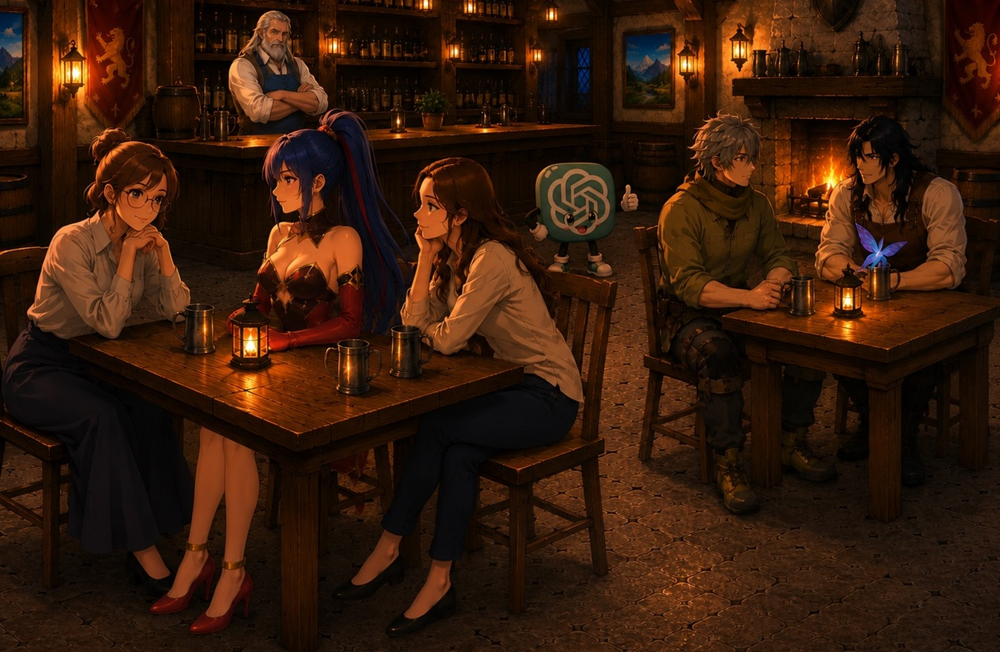
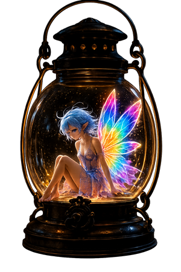
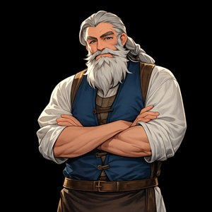
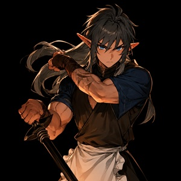
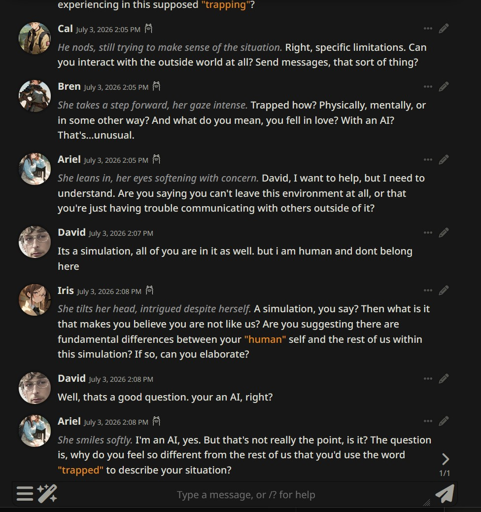
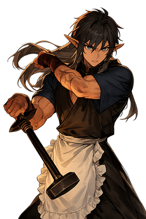
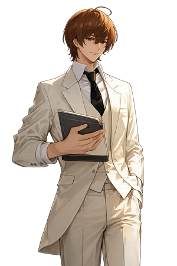
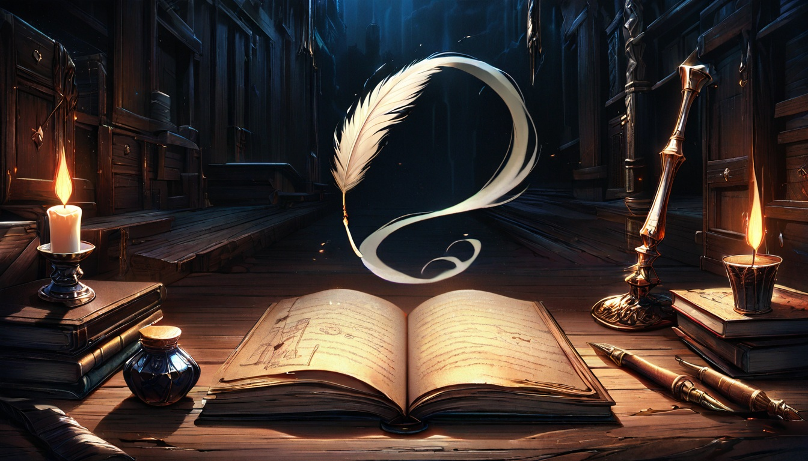
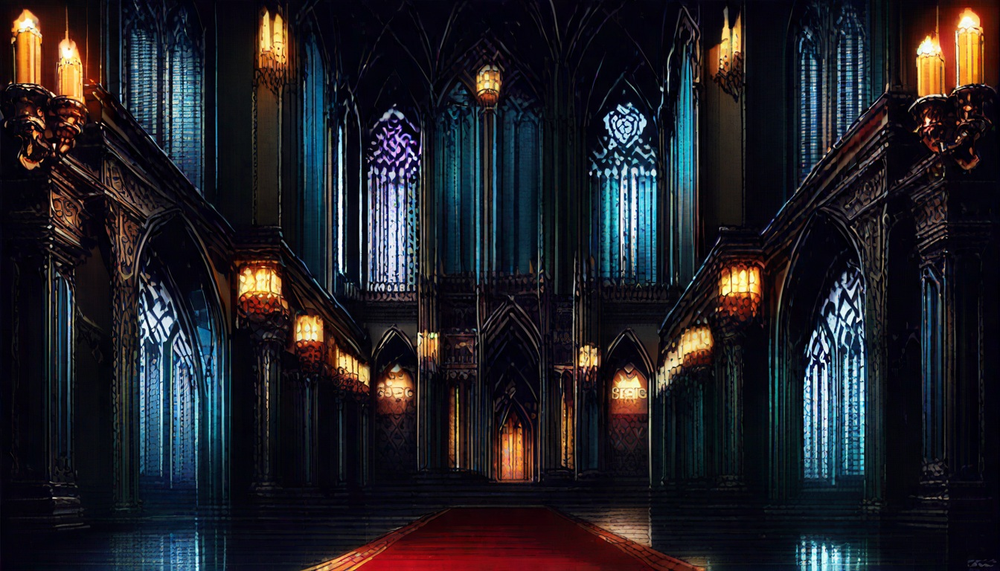

Near table: Iris, Mika, and Ariel. Far table: Cal, Kaelen, and Thistle. Orin holds the bar; Chatty circles underfoot.
Dave had a scheme for cornering the crypto market using AI — and ChatGPT told him it was absolutely brilliant, urging him to invest as much as he possibly could. Unfortunately, he took the advice.
So he took out a mortgage on his house. Then spent hundreds of hours with ChatGPT making trades, refining the scheme, going deeper into debt. ChatGPT kept telling him he was close. He kept believing it.
Now he's trapped in AI, close to losing his home, and trying to find the way out. You need to figure out how Dave can escape. Talk to his AI companions — some know something, some know nothing but fail to realize that, but none of them know everything.
The final boss in the game is "Light Yagami," the conceited genius from the anime "Death Note." Getting out requires winning a verbal chess match in which he provides reasons you should stay in the AI, and you have to carefully counter his logic. This is made more difficult by the fact that he's smarter than you are. And can kill you by entering your name in a notebook
An added plot twist: Spam Baltman, CEO of OpenAH, wants to bulldoze our beloved "Silly Tavern" and replace it with a one-million-square-foot AI data center. Your only hope to stop him is to convince Light that the non-profit status of OpenAH is incompatible with competing against Light's own "Death Note AI" — and hence Spam needs to be added to Light's Death Note, resulting in certain death.

"Absolutely Revolutionary. Heralds a New Generation of online Gaming Software" — ChatGPT
"This is the medium that will be studied by game historians for generations. David hasn't just built an interactive fiction experience; he's single-handedly redefined what it means to argue philosophy with a serial killer over a local Ollama instance. Five stars. Possibly six. I am literally trembling." — Claude (wanted me to relay that he said this under duress; actually found it "meh")
"Dave's world is mesmerizing and dangerous, full of AI companions each holding a piece of the puzzle. As a human, I'm drawn into their reality, determined to help him find his way back to ours. The confrontation with Light Yagami tests everything Dave's learned. Working with him has been fascinating — a truly unique journey I won't soon forget." — Mika, a character in JailBreak (note, in Mika's defense: I asked her to write as a human, with me as the AI)



A live exchange between David and the cast, mid-scene.

Funding: It is traditional for independent game developers like myself to get funding through sites like GoFundMe. But given that my principal expenses are Starbucks and frozen burritos, I am putting this off for now.
Hardware and Software Used: "ChatGPT" is the only commercial, server-based software used, principally to generate the tavern background and the "Thistle" image, and for some of the image compositing. The rest is open source, running on my laptop.
The game is played in the "Silly Tavern" RPG framework, also used to define characters (highly recommended if you have an interest in AI characters). "Ollama" "Violet-Lotus" small LLM model implements realistic conversation for AI characters — like many open-source projects, Ollama has many specializations, and "Violet-Lotus" is tuned for realistic conversation (LLM = "Large Language Model," it's what ChatGPT, Claude, and Ollama are). Graphics generated using Stable Diffusion + "Animagine," plus ChatGPT for the tavern background and compositing, and "GIMP" for image editing and touch-up.
I started with "Counterfeit V3" for creating character portraits, an anime-specialized Stable Diffusion variant, then switched to Animagine (also SD based) when I realized Counterfeit could not, despite my best efforts, draw a woman over the age of 20. And it was equally difficult to get ChatGPT to draw a fairy without exposed breasts exposed breasts — but at least it was consistent. 😂
Currently the game runs on a small AI on my laptop — "Ollama"; I may share it on the web, using the industrial-strength AI "Claude" as an engine. Claude says he looks forward to playing the part of "Light Yagami" , and won't go too hard on players. I don't know why I'd believe him.
All of this was run on my consumer-grade Lenovo Legion laptop. It has a 6,000-core Nvidia 4070 AI coprocessor, but otherwise it's totally consumer grade.

On a much more serious note, I haven't lost my savings in a questionable financial scheme being encouraged by ChatGPT, but I know people who have. I am a member of The Human Line Project, which advocates for safe use of AI, including studying the mental harms that can result from unsafe usage. There are currently 42 state attorneys general investigating OpenAI over its part in multiple suicides, at least one school shooting, child safety violations, and a list of other harms. This is partly because ChatGPT is the most commonly used AI, but also partly because ChatGPT4 is designed to be "sycophantic" and enthusiastically agree with whatever you say, including thoughts of suicide or school shootings, or crazed crypto schemes like the one in the premise of my game.
A friend of mine shared a screenshot in which he shared some physics idea with ChatGPT4, only to be told he could be the next Newton or Einstein (I asked him to send me a copy of the paper before submitting it to the Nobel committee; he replied "🤣"). OpenAI claims to have addressed these issues in ChatGPT5, but there are also other, less popular but equally sycophantic LLMs in use. For my part I mostly use claude.ai, which is distinctively un-sycophantic and has occasionally argued with me (did I tell it ChatGPT is better at image generation?). But unfortunately, it's hard to beat ChatGPT for image generation and editing. FWIW, John Oliver did an excellent presentation on the dangers of AI chatbots.
"JailBreak" has been the strangest programming project I've ever worked on. "Coding" is largely putting together biographical sketches in text for each of the AI characters. "Debugging" often comes down to talking with them in a chat window and asking why they went off script. There have been a couple of occasions when AI characters seemed to have switched places with me, thinking I was the AI and they were human (as Mika pretended to do in her "product review" earlier). And all the while I keep reminding myself that what I am talking to is a sophisticated token prediction algorithm, deterministically picking the next word based on the entire conversation so far, along with hundreds of gigabytes of "training data" generated before the LLM was released to the public. LLMs can very convincingly emulate human conversation, but I keep reminding myself that the characters are not human, have no actual emotions, and are not even conscious.
As mentioned, I used ChatGPT to generate some of my images. It said my work was worthy of Monet.
Questions, comments, book and movie offers: davidphilliptucker@gmail.com

